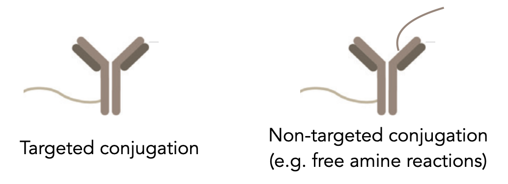

Tips for inCITE-seq
InCITE-seq requires antibodies that are compatible with flow cytometry.
Targeted conjugation of antibodies, rather than untargeted reactions (e.g. free amines), is strongly recommended.
This way, the stoichiometry of DNA tags:antibody is controlled and the epitope binding site is not disturbed.
|

|
Validation via flow cytometry and by immunofluorescence in frozen post-fixed tissue sections is highly recommended.
Antibodies optimized for FFPE may not work for frozen, lightly-fixed tissues.